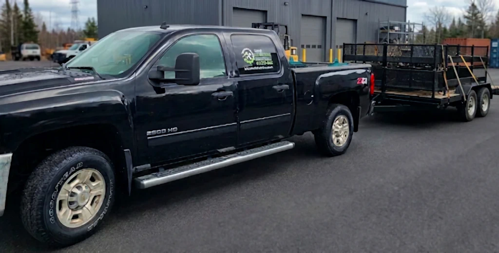

Fabrication sur mesure
Des pièces et structures réalisées selon vos plans, à l’unité ou en série.

Bienvenue chez "Mécanique Luc Vallerand" - Votre partenaire de confiance pour la fabrication, la maintenance industrielle et les travaux de soudage de pointe !
Fondée en 2019, Mécanique Luc Vallerand s'est rapidement imposée comme une entreprise fiable et innovante dans le secteur manufacturier. Notre passion pour la perfection, l’ingéniosité et notre engagement envers la satisfaction du client ont été les pierres angulaires de notre succès continu.
En matière de fabrication, nous sommes reconnus pour notre capacité à transformer les idées en réalité. Que ce soit pour des projets sur mesure ou en série, notre équipe est prête à répondre à vos besoins spécifiques. Nous exploitons les technologies les plus avancées et les matériaux de qualité supérieure pour créer des produits d'une précision inégalée, toujours dans le respect des délais convenus.
La maintenance industrielle est un autre pilier essentiel de nos services. Notre équipe d'experts est disponible pour résoudre rapidement les problèmes et minimiser les temps d'arrêt imprévus. Nous croyons en la prévention plutôt qu'en la réparation, c'est pourquoi nous proposons également des services d'entretien préventif personnalisés pour aider à prolonger la durée de vie de vos équipements et à optimiser leur efficacité.
Mais ce n'est pas tout, car nous excellons également dans les travaux de soudage. Nous possédons une vaste expérience dans une variété de techniques de soudage. Qu'il s'agisse de soudures délicates sur des matériaux sensibles ou de projets de grande envergure nécessitant une résistance et une durabilité supérieures, Mécanique Luc Vallerand est prêt à relever tous les défis.
Que vous soyez une petite entreprise en pleine croissance ou une grande industrie établie, Mécanique Luc Vallerand est là pour vous accompagner dans tous vos projets de fabrication, de maintenance industrielle et de travaux de soudage. Faites-nous confiance pour des solutions de qualité, une réactivité hors pair et un partenariat durable. Contactez-nous dès aujourd'hui pour découvrir comment nous pouvons contribuer à la réussite de votre entreprise.
Une approche simple : comprendre votre besoin, fabriquer avec précision et livrer un travail durable.
Des pièces et structures réalisées selon vos plans, à l’unité ou en série.
Diagnostic, soudage et remise en service pour limiter les temps d’arrêt.
Une attention constante à la qualité, à la finition et au respect des délais.
Un service personnalisé, de la première question jusqu’à la livraison.
Un parcours clair, sans surprise, du premier échange jusqu’à la remise en service.
Vous nous expliquez la pièce, le projet ou la panne à régler.
Nous validons la solution, le délai et le prix avant de commencer.
Le travail est effectué en atelier ou directement sur votre site.
Nous vérifions le résultat avec vous et assurons la remise en service.
Quelques exemples de pièces et structures fabriquées sur mesure.


Appelez-nous ou écrivez-nous pour discuter de votre besoin et obtenir une soumission.